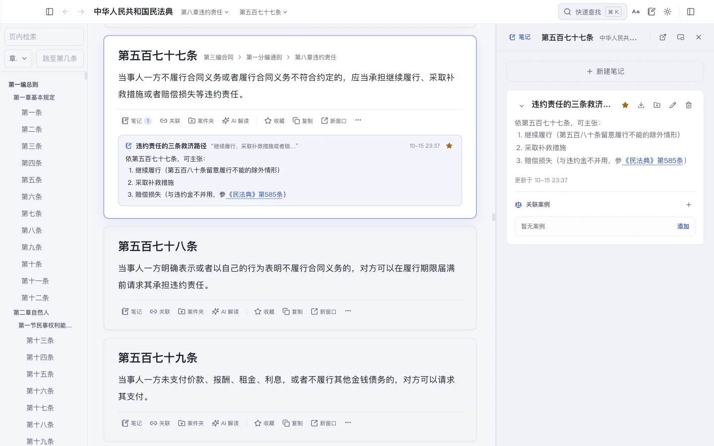
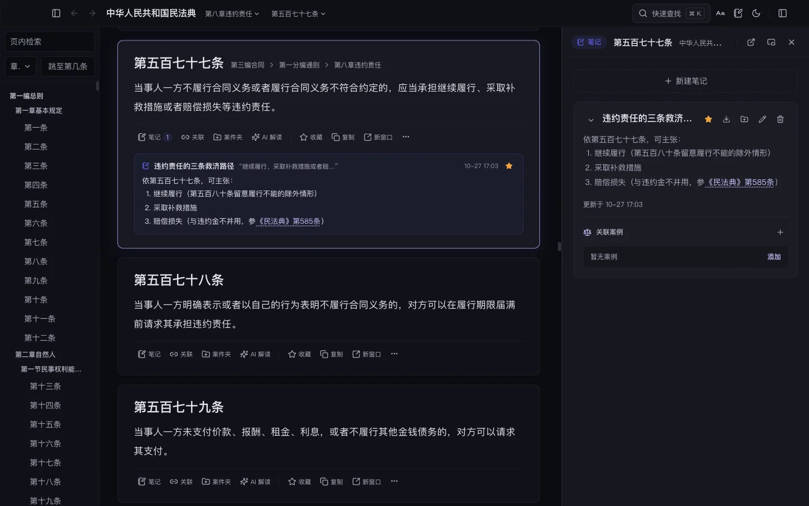
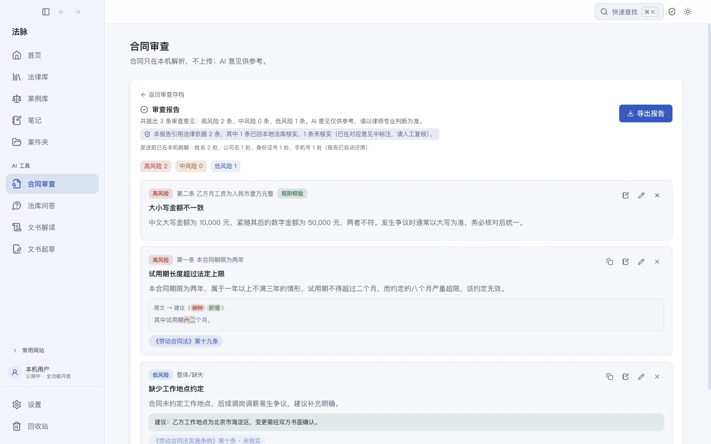
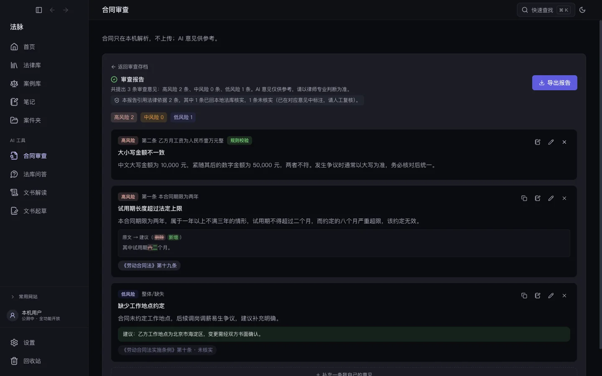
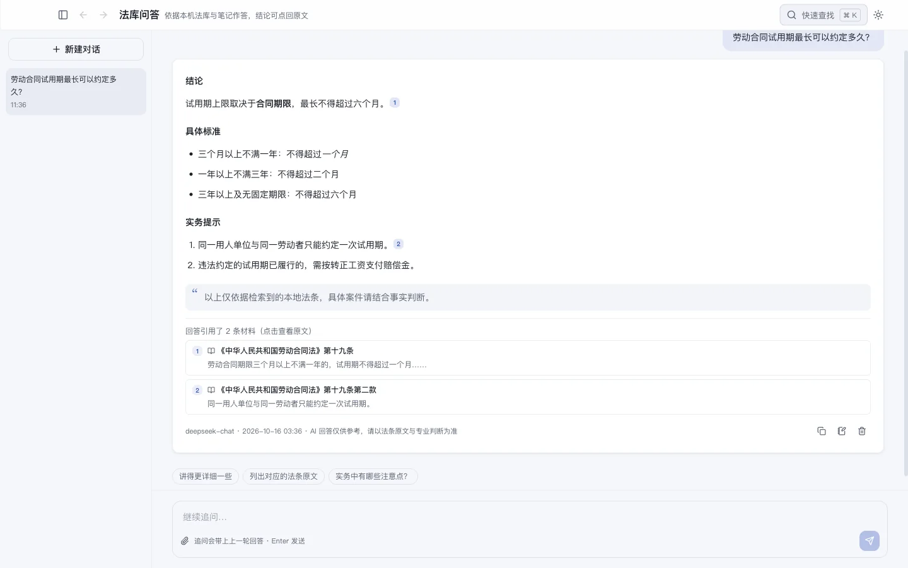
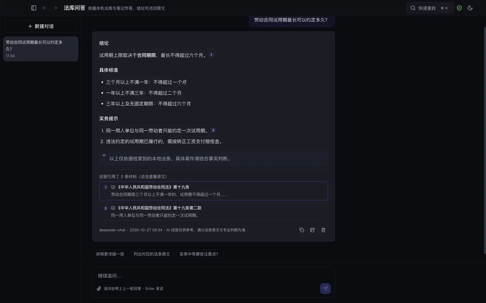
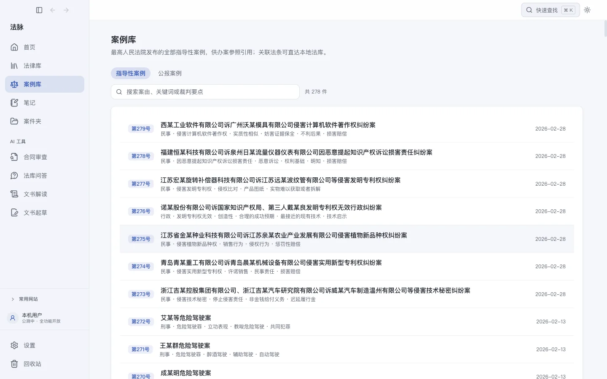
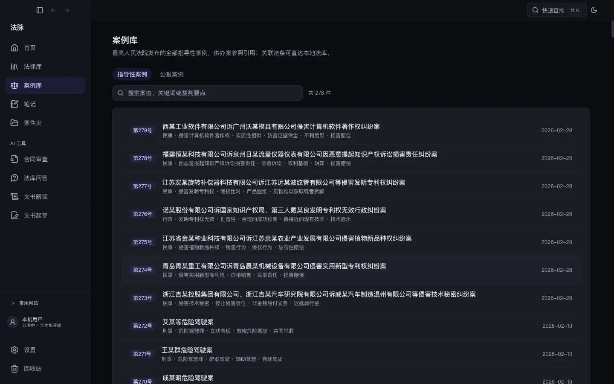
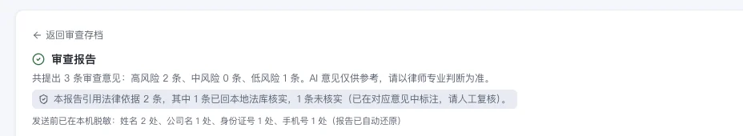
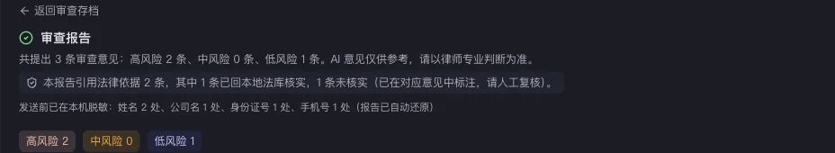

法条在本地，笔记在手边，
合同不出门
法脉把查法条、记笔记、审合同收进同一个桌面工作台。 内置 1513 部现行法律、行政法规与司法解释，共 56182 条，断网也能全文检索； AI 给出的每条依据都会回本地法库核验，点一下就能跳回原文—— 数据与合同全程留在你的电脑上。








把整条工作流放进一个窗口
查法条不用切浏览器，写意见不用切文档，AI 的结论不用再回头人工核一遍。
合同审查：逐条给意见，改法可直接抄走
拖入合同即自动切分条款，按合同类型与甲乙方立场逐条出具风险意见， 并给出可直接替换的修改文本，原文与建议逐字对照。
- 内置劳动、买卖、房屋租赁审查清单
- 区分甲方 / 乙方立场，结论跟着屁股走
- 审查报告一键导出 Word / PDF
离线法律库 免费
1513 部现行法律、行政法规与司法解释，共 56182 条，全部取自国家法律法规数据库官方文本。编章节导航、条号跳转、全文检索，断网照查。
引用可核查 AI
AI 给出的每条法律依据都回本地法库校验：核实通过的可点击跳转原文，验不过的显著标注「未核实」，把幻觉挡在报告之外。
法库问答 AI
用日常语言提问，先检索本地法条与你自己的笔记，再基于检索到的材料作答，每个论断都标注可点回原文的出处。
划词即笔记 免费
读到关键处划选就能记笔记、加高亮、建立法条互引并挂接裁判案例，笔记始终贴着它所解释的那一条。
案件夹与备忘录 免费
按案子归拢法条、笔记与案例，一键导出备忘录；对照阅读支持两部法规左右并排、条号联动。
数据在你手里 免费
全部内容存在本机 SQLite，每天启动时自动快照、滚动保留最近 7 份，支持备份恢复与 JSON 导入导出，可设应用锁。卸载不留云端尾巴。
为什么是法脉，而不是通用 AI 或在线法库
它不替代你的判断，只解决两个老问题：资料不敢上传，AI 引用不敢信。
- 合同要贴进别人家的服务器
- 法条靠模型记忆，编没编无从核验
- 答完即走，沉淀不下笔记与案卷
- 通用能力强，闲聊顺手
- 法条文本权威
- 要联网、要账号，检索记录留在云端
- 查询、笔记、案件材料彼此割裂
- 多面向机构订阅，个人使用门槛高
- 材料全程不出本机，整机断网也能用
- AI 每条依据回本地法库核验，点击回原文
- 查法条、记笔记、审合同在一个窗口闭环
- 法库、检索、笔记永久免费，付费只为 AI 与更新
价格
法律库、检索、笔记与案件夹永久免费；付费解锁 AI 与实时法规更新。
月卡
一次性 30 天，不自动续费。
适合临时接一单的场景。
年订阅
全部 AI 功能与实时法规更新。
早鸟售完即恢复 ¥199。
买断
该版本永久可用，含 1 年数据更新，
之后续更新 ¥99/年。
你的合同，我们看不到
这不是承诺问题，是架构问题——我们根本没有能接收它的服务器。
无账号 · 无遥测
不需要注册，不采集任何使用数据，产品内不埋任何统计。法律库、笔记与合同存放在你自己的电脑上， 我们没有能接收它们的服务器。使用云端模型审查时，合同文本会发往你自己选定的模型厂商（见右侧）。
自带密钥直连
AI 功能由你在设置中填入自己的模型服务密钥，请求从你的电脑直连模型厂商。我们没有中转服务器，也就无从看到内容。密钥经系统级加密只存本机。
离线验证授权
激活码采用离线签名验证，全程不联网。不绑定机器指纹，换电脑重新激活即可。


常见问题
用 AI 功能还要另外花钱吗？大概多少？
没有网络能用吗？
公测结束后，我写的笔记会被锁住吗？
支持 Windows 吗？Intel Mac 呢？
法规数据多久更新一次？
换电脑或重装系统怎么办？
最近更新
公测期迭代快；改了什么、修了什么 bug，都原样写在日志里。
- 法规库从 520 部扩到 1513 部现行（5.6 万条），全国性法规已是全集：法律 303、行政法规 605、司法解释 563，并首次收全了以前一件都没有的三类：全国人大常委会立法解释 25 件（与法律同效、开庭直接引）、刑法修正案 12 件（从一到十二）、监察法规 2 件（含监察法实施条例）。逐类跟国家法律法规数据库的数量对过，一致。
- 下载包没变大：装好自带 120 部最常用的，其余在「法律库」页按效力级别按需拉——只做刑輩就只拉司法解释与修正案，按钮上直接写着要下多少（全部拿下来也就约 28 MB）；拉过的以后不联网也能看。
- 生态环境法典（8 月 15 日施行）已入库，被它取代的环境保护法、大气污染防治法等 10 部旧法改标「已废止」——以前它们还写着「现行有效」，容易引错。旧法仍留在库里可查，老案子用得上。
- 另有 3 件生态环境侵权的司法解释跟着法典换了新文本（原先库里是 2022/2023 年的旧版）。
- 不知道该下哪些？云端目录里按执业方向选（民商事、刑事、劳动、家事、公司与投融资、知识产权、行政、房地产与建工），胶囊上写着这个方向还缺几部，点一下就只剩这一批，再点整批拿。方向是您自己选的：不探测、不看笔记、不传任何东西出去。
- 快速查找（⌘K）里本地搜不到时，会把云端有的同名法规列出来，点一下就地拉下来并打开——「搜了没有」不再被当成「法脉没有」。
- 一次拉很多部法规时能看见进度（「获取中 37/1404」）、也能随时停；停了已经拉到的照样能用。
- 化名保护补齐到全部 AI 功能：以前只有合同审查会把当事人姓名、公司名换成「李某」「甲公司」再发出去，现在问答、文书解读、起草、案件夹归纳都一样；发截图会单独提醒一次，因为图片只能整张原样发。
- 发现可能漏掉的当事人时会在发出前停一下（默认开），当场加进名单点「重新脱敏」这一次就换掉；也能在「查看发出的全文」里搜一下某个名字到底发出去没有。
- 合同扫描件上的公章发图前会被自动圈出，点一下全部涂黑；材料涉及病情、前科这类法定敏感信息时也会提醒您（这类内容遮掉 AI 就看不懂案情，所以只提醒、不替换）。
- 发截图给 AI 前能先涂黑：图片没法换化名，只能整张发出去，所以发之前把图摆给您，拖个方框就涂掉不想给的部分（本机模型不打扰）。
- 照《个人信息保护法》第二十八条的类别补齐识别：对公账户（合同里最常见那个，以前整个漏掉）、护照通行证、住院号、车架号、IP、网址等十余类；法条原文和金额照旧不动，8000 条法条验过零误换。
- 笔记和案件夹能导出化名版（Word / PDF）：当事人换成「李某」「甲公司」，法条原文、案号、法院名照样保留，拿给同行参谋或做培训材料都能直接用。
- 想看就能看：点右上角盾牌里的「查看发出的全文」，显示的就是 AI 实际读到的那份内容（真名已换成化名）；也可以在设置里打开「发送前让我过目」，出网前先停下来给你过目，不妥当场取消。
- 发给 AI 之前多了一道自查：换完化名再扫一遍，把「看着像当事人却没换掉」的词挑出来提示你，点一下加进名单下次自动替换；判断依据是你本机的法规全文，法条里出现过的词不会被当成人名，所以提示很干净。
- 案件夹里能建「当事人名册」：夹内材料的当事人自动列成候选，点一下入册，之后在所有 AI 功能里都用同一个化名，不会串人；自动认不出的还能在设置里自己补，或者列进「永不发送」——换成「已隐去」且不还原。
- 右上角多了个盾牌，用 AI 时一眼看清材料是只在本机跑、还是发到云端（以及有没有化名）；「设置 → 隐私」里能查出网台账，也能导出表格交给所里备查。
- 笔记页改成左列表、右详情：点一条就地阅读和修改，关联的法条原文直接显示在旁边，不再跳来跳去。
- 写笔记的面板现在停靠在条文右侧，边看边写；喜欢浮窗的，面板标题栏一键切换，位置大小都会记住。
- 全应用的圆角、按钮、选中效果统一了一遍，去掉了大块实心蓝，长时间看着没那么累。
- 顺手修了一个老 bug：编辑器里的引导文字（「写下对该法条的理解……」）其实从来没显示出来过，现在有了。
升级方式：应用内「设置 → 更新」下载覆盖安装即可，笔记与数据不受影响。
先装上，公测期免费用
不需要账号，不需要填付款信息，卸载不留云端尾巴。
遇到问题、想提需求或进测试群：加微信 chengyue-wish（备注「法脉」）。